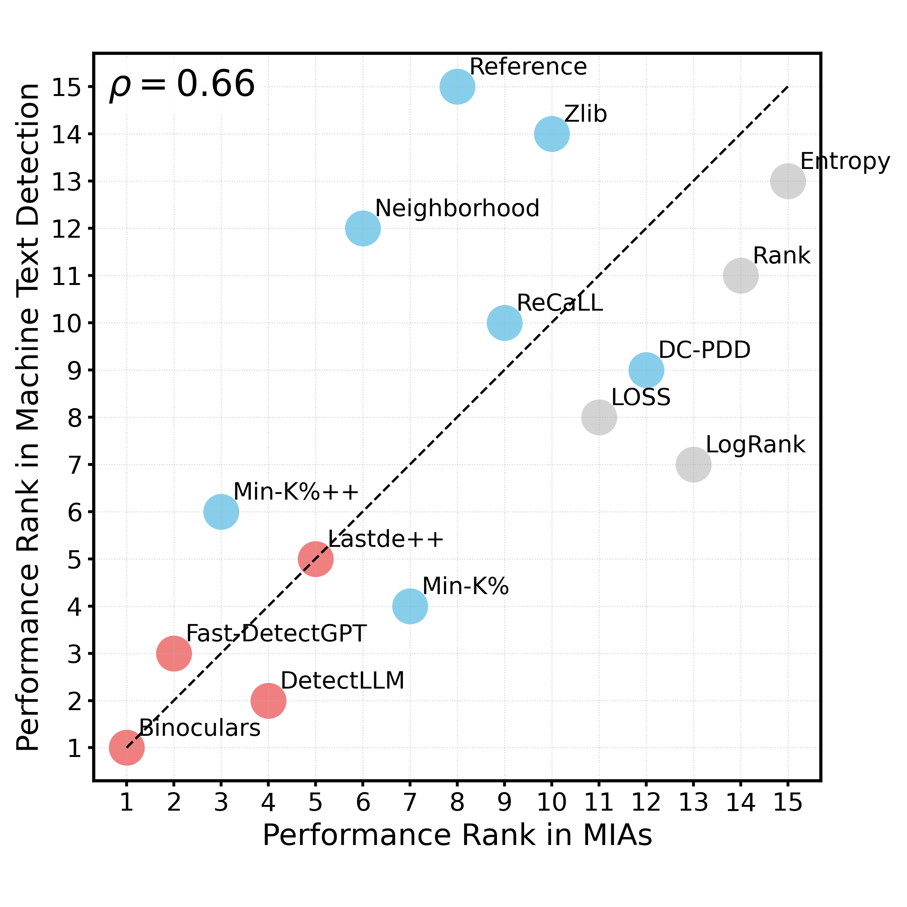
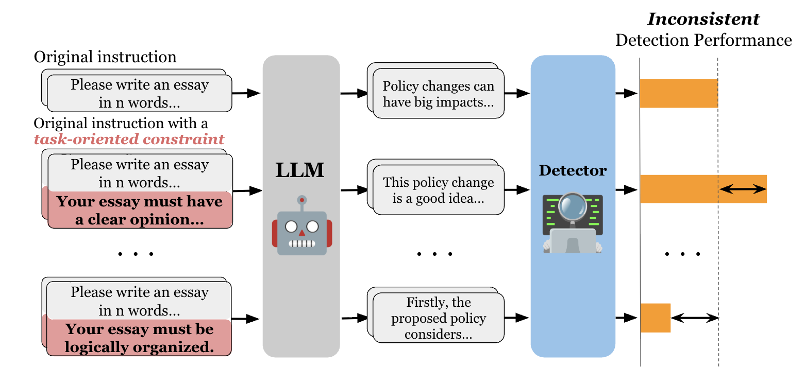
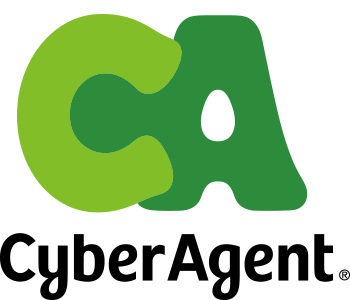

Hello! I am a final-year PhD student (est. March 2026) at the Institute of Science Tokyo, advised by Prof. Naoaki Okazaki.
My research aims to develop principles and methods for building and ensuring safe, secure, and
reliable AI systems, mitigating their negative societal implications. My current work
focuses on
membership inference attacks, AI-generated
text detection, jailbreak defense, and reliable LLM-as-a-judge. My work has been published in top-tier
conferences such as ACL, EMNLP, and AAAI, and I have led multiple collaborative projects with Prof.
Chris
Callison-Burch at UPenn  and Prof.
Preslav
Nakov at MBZUAI.
Outside of academia, I was involved as a research advisor for a
startup in Japan on multi-lingual text generation.
and Prof.
Preslav
Nakov at MBZUAI.
Outside of academia, I was involved as a research advisor for a
startup in Japan on multi-lingual text generation.
|
Email: ryuto.koike [at] nlp.c.titech.ac.jp 


|

|
|
|
|
|
|
|
 |
Ryuto Koike*, Liam Dugan*, Masahiro Kaneko, Chris Callison-Burch, Naoaki Okazaki Preprint 2025
TL;DR - We theoretically prove that membership inference attacks (MIA) and machine-generated text
detection share the same optimal metric, and empirically demonstrate strong cross-task transferability
(ρ ≈ 0.7) across diverse domains and generators. Notably, a machine text detector outperforms
a state-of-the-art MIA on MIA benchmarks. To support cross-task development and fair evaluation,
we introduce MINT, a unified evaluation suite implementing 15 recent methods from both tasks.
🏆 Outstanding
Young Researcher’s Paper (21/517 ≈ 4.1%) in ANLP
|

|
Ryuto Koike, Masahiro Kaneko, Ayana Niwa, Preslav Nakov, Naoaki Okazaki Preprint 2025
TL;DR - We propose ExaGPT, an interpretable AI text detector that identifies a text by checking
whether it shares more similar spans with human-written vs. machine-generated texts from a datastore
and presents those spans as evidence for users to assess how reliably correct the decision is. ExaGPT
achieves both high interpretability and significant performance, outperforming prior interpretable
detectors by up to +37.0% accuracy at 1% FPR.
|

|
Ryuto Koike, Masahiro Kaneko, Naoaki Okazaki AAAI 2024
TL;DR - We propose OUTFOX, a framework that improves the robustness of AI text detectors by
allowing both the detector and the attacker to adversarially learn from each other's output through
in-context learning, achieving a +41.3% F1 improvement against strong adaptive attacks. This paper is
among the first to effectively use AI to detect AI.
🏆 Double
Sponsorship Awards (1/140 ≈ 0.7%) in YANS
📸 Featured in Nikkei, NAACL Tutorial, Originality.ai Blog 📈 >150 citations in Google Scholar |
|
 |
Ryuto Koike, Masahiro Kaneko, Naoaki Okazaki EMNLP Findings 2024
TL;DR - We reveal the vulnerabiltiies of AI text detectors against prompt diversity in text
generation.
Specifically, even task-oriented constraints -- constraints that would naturally be included in
an
instruction and are not related to detection-evasion -- cause existing powerful detectors to degrade
their detection performance.
We highlight the importance of ensuring prompt diversity to build robust benchmarks grounded in
real-world scenarios.
|

|
Masanari Ohi†, Masahiro Kaneko, Ryuto Koike, Mengsay Loem, Naoaki Okazaki ACL Findings 2024
TL;DR - We identify a self-preference bias in LLM-as-a-judge i.e., LLMs overrate texts with higher
likelihoods while underrating those
with lower likelihoods. We further propose a simple yet effective mitigation method via in-context
learning, achieving better alignment with human evaluations.
🏆 Outstanding
Young Researcher’s Paper (18/427 ≈ 4.2%) in ANLP
🏆 Best Paper Award in Journal of Natural Language Processing |
All PublicationsJournal
International Conference
Preprint
Domestic Conference and Symposium (in Japanese)
|
|
|
|

|
Institute of Science Tokyo, Tokyo, Japan Doctoral Researcher (2023.04 - Present) Advisor: Prof. Naoaki Okazaki |
|
|
University of Pennsylvania, Philadelphia, PA, USA Visiting Researcher (2024.10 - 2025.10) Advisor: Prof. Chris Callison-Burch |

|
Mohamed bin Zayed University of Artificial Intelligence (MBZUAI), Abu Dhabi, UAE Research Collaborate (2024.04 - 2025.04) Advisor: Prof. Preslav Nakov |
|
Exawizards, Inc., Tokyo, Japan Machine Learning Engineer Intern (2022.02 - 2022.03) |
|
|
 |
CyberAgent, Inc., Tokyo, Japan Research Intern (2021.09 - 2022.01) Software Engineer Intern (2021.07 - 2021.08) |
|
|
|
|
|
Institute of Science Tokyo (formerly Tokyo Institute of Technology), Tokyo, Japan Ph.D. in Computer Science (2023.04 - est. 2026.04) |

|
Keio University, Tokyo, Japan M.S. in Information and Computer Science (2021.04 - 2023.03) B.S. in Information and Computer Science (2017.04 - 2021.03) |
|
|
|
|
|
©︎ Ryuto Koike / Design: Jon Barron. |